-
First Encounter
1998My first meaningful encounter with a computer was with my parents' computer, an old Mac they used for word processing documents. I was probably around 6 or 7 years old when my older sister, older brother would play Caveman Ninja, while I would mostly watch (since I would die too soon). It was an extremely positive first encounter, and definitely skewed my view of computers to be, for kids like me, something of an entertainment and device and, for "adults", as a word processor for documents. I found this game online, and I have decided to replay it, to see if it is really as hard as I remember.
Source: SSEGA.com and Caveman Ninja ©
-
Elementary School Entertainment
When I was in elementary school, the computer was something we only used on the weekends, and all three of us would share. It was used almost always for entertainment--to watch videos, AIM my friends, and play CD-ROM or flash games. Rarely, did I use the computer to create a powerpoint.
Videos of early 2000s
Before YouTube, videos were found on various different websites, including Albino Blacksheep, Newgrounds, and eBaum's world. Many of my friends and I, from this generation, still reference these videos to this day. They have become "public words" (Spitulnik 1994) for us, which we use to identify ourselves as a part of this generation in American culture.
Source: YouTube
Back then, funny videos were so sparse and hard to come by. I found out about them from my siblings, who found out from their classmates, since they would probably reference it during class to make jokes. Today, it feels like there is an overwhelming abundance of media. Now, there are many established YouTubers we follow, from whom we expect a consistent and regular supply of entertainment. Today, we can even stream many movies and TV shows on websites like HBOGO, Netflix, Hulu, Amazon Prime Video. Before, such a thing was unimaginable, and media was a lot more vertical. Media has been democratized and also multiplied exponentially.
Yet, I still am able to share the same "public words" with my friends today, despite the many different possible sources of entertainment. I think this can be explained by the fact that "viral" videos do not necessarily go "viral", but are dispersed by people who have a large following, that makes it seem like it goes "viral", when in fact, it was just on a popular channel of communication by a reputable person.
Websites of early 2000s
Source: Way Back Machine
Cartoon Network
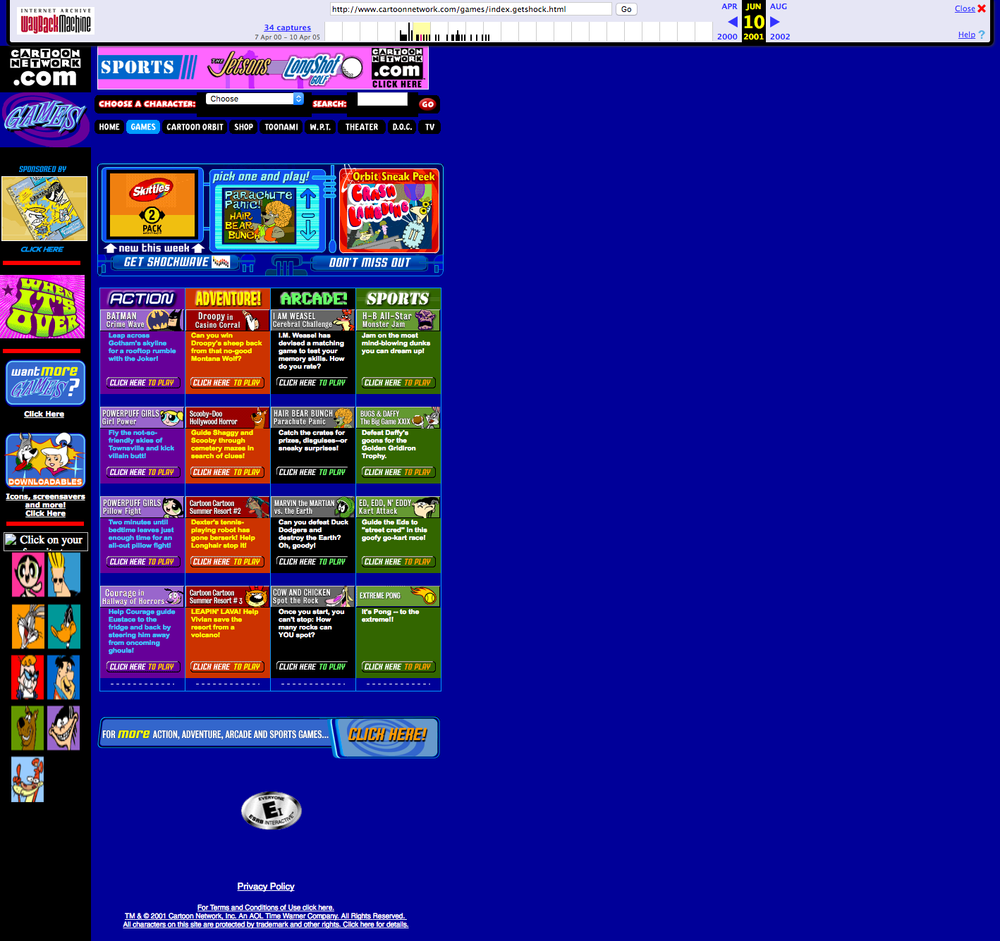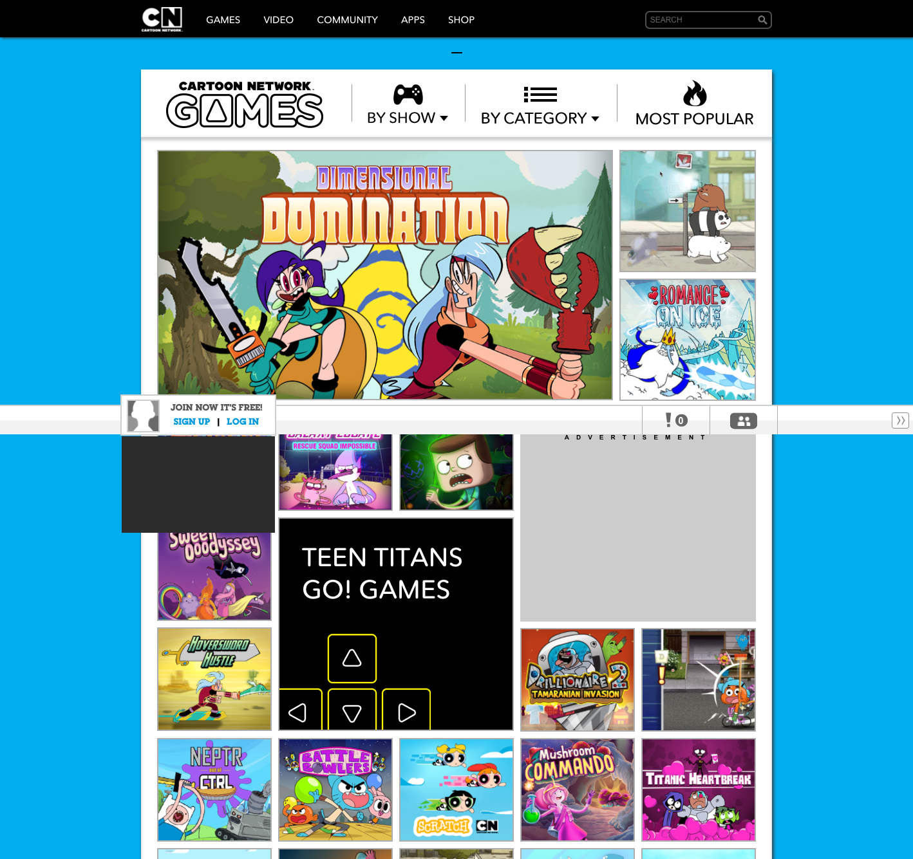
Addicting Games
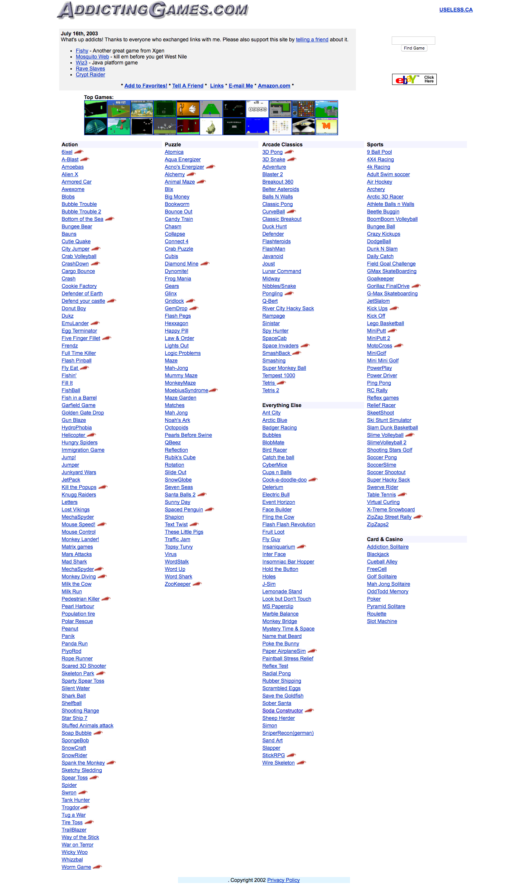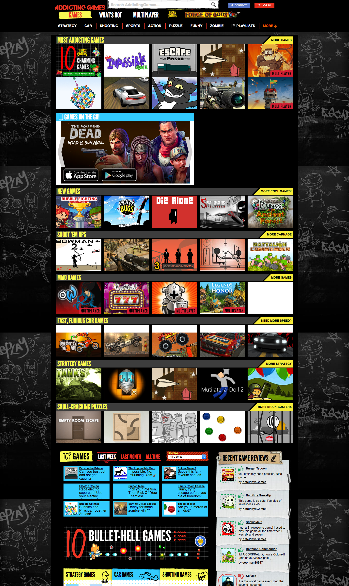
IMDb
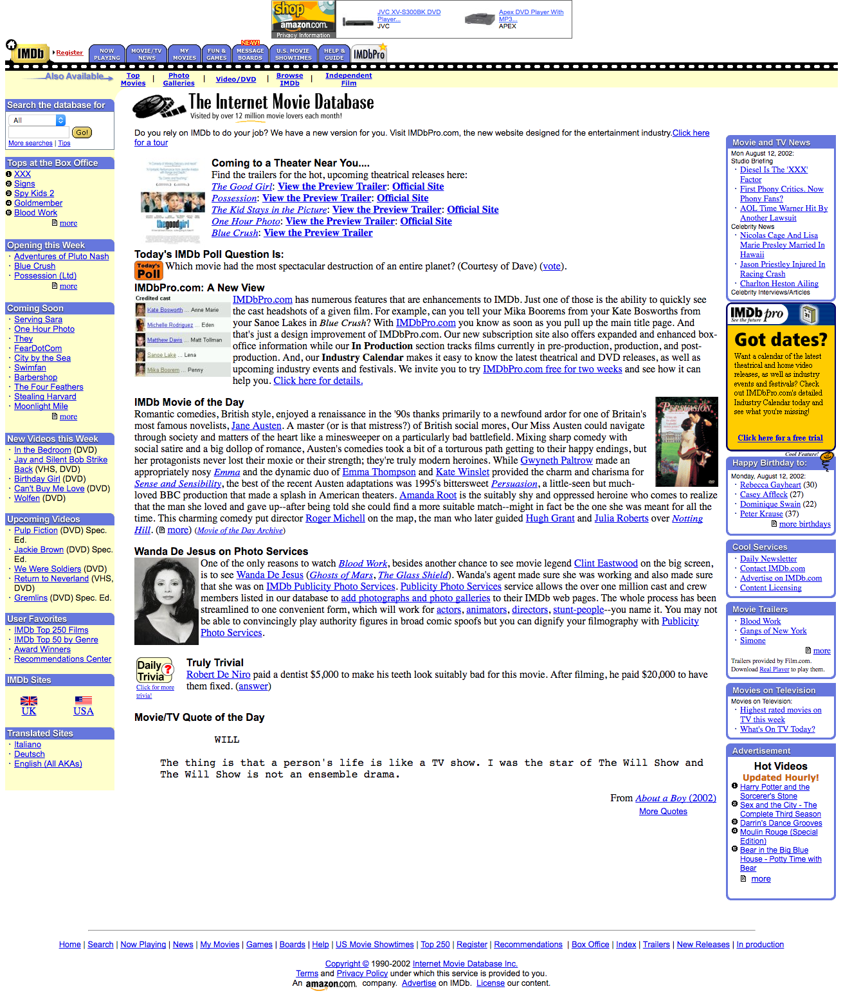
Ask Jeeves
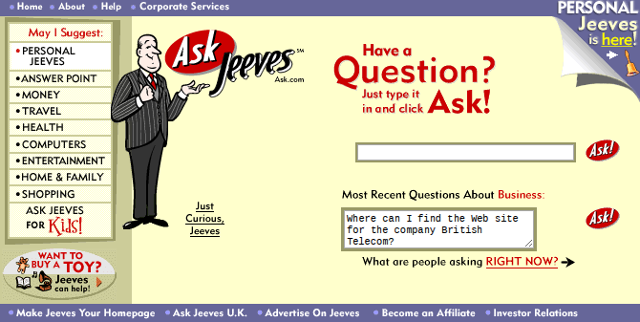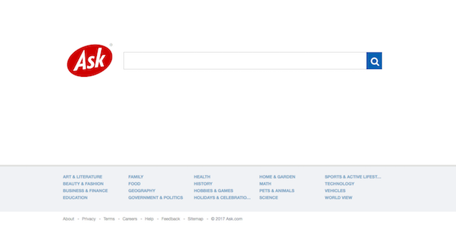
Google
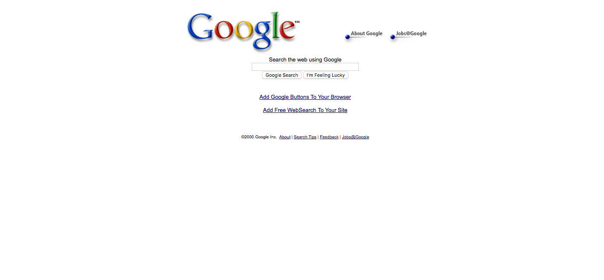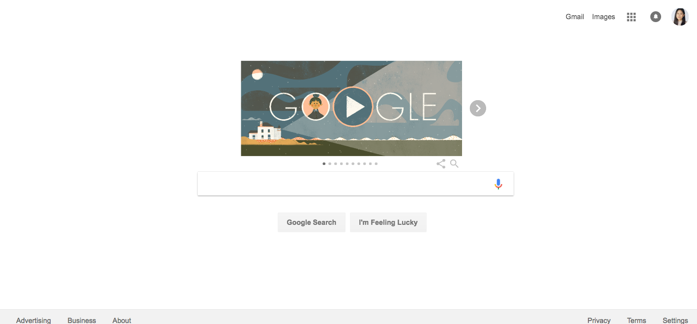
Apps of early 2000s
AOL & AIM
Desktop Assistants
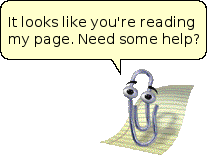
Bonzi Buddy and Stitch desktop assistant clients were a big deal when I was a kid. Of course, unfortunately, Bonzi Buddy turned out to be a virus, but he was so much fun to play with nonetheless--he would even sing! These clients, in addition to Microsoft Word's default Paperclip assistant, seemed so real, like they were living digital entities inside my computer to the elementary school kid I was. At the time, it seemed revolutionary, and to give the assistant a visual representation was even better. Today, we have assistants like Siri, Google (Home), Amazon's echo (Alexa), but they are just voice commands. It does make me wonder, what virtual assistants will look like (or continue not to have any visual appearance) in the future.
Images property of BonziBuddy© and Microsoft©
Image Sources: BonziBuddy, and Microsoft Paperclip
Games of early 2000s
Type to Learn
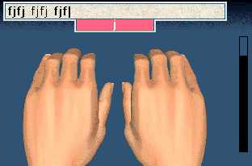
Property of Type to Learn©
Image Source: Superkids.com
Math Blaster
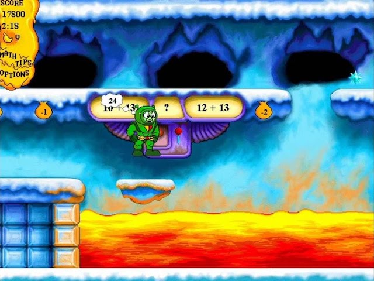
Property of MathBlaster©
Image Source: YouTube /OniLink99999
Reading Blaster
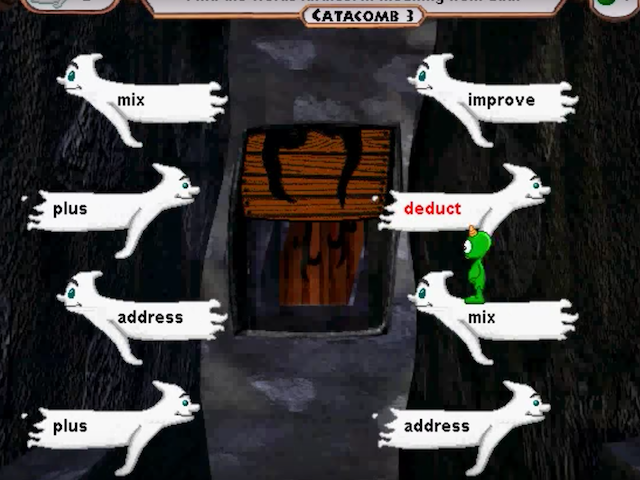
Property of ReadingBlaster ©
Image Source: YouTube /Lingyan203
JumpStart 5th Grade
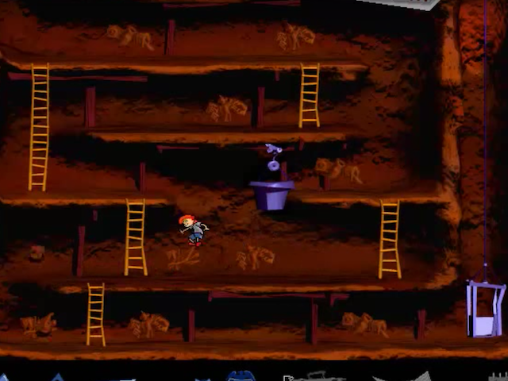
Property of JumpStart©
Image Source: YouTube /Lingyan203
Crunchling Adventures
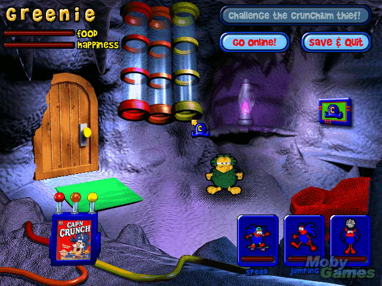
Property of Quaker Oats©
Image Source: YouTube /Lingyan203
-
Middle School & Social Identity
2003-2006Just as I started middle school, I started using Xanga, which is a social blogging website, and later Myspace, a once-popular social media website. Though I used the computer for some school assignments, the computer was still very much an entertainment machine, and something I used everyday, but still shared with my siblings, and therefore, not too frequently. Later, once my sister left for university, was when I started to use the computer more. Middle school was the time when I started to use teh computer more for things other than games and videos, and starting using Xanga as my journal, and Myspace for sharing photos and talking to friends, editing my profile and working on the online presentation of myself, essentially.
Myspace
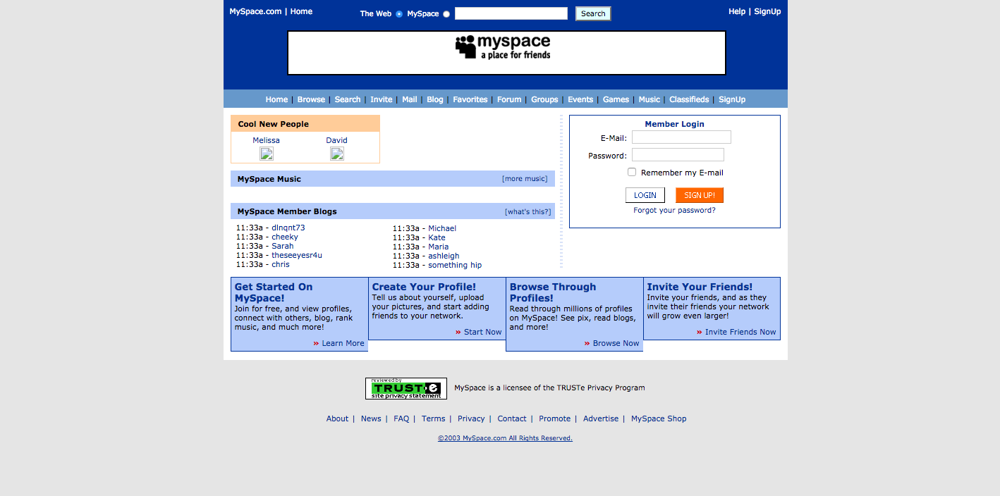
Xanga
Games
Metal Slug ©
Property of Metal Slug ©, source game: NeoGeoFun
Maplestory
Play the video for music~
Source video: Youtube /iQuillo
MapleStory was my favorite game in middle school. In fact, I sometimes pulled all nighters (secretly) to play this game. It's tough to admit, because it requires no skill whatsoever, only providing a false sense of accomplishment for grinding or simple button mashing even six year olds can do. It was more the social and discovery aspect of the games I really enjoyed. I was one of the beta players, since it was new and originally from Korea. In fact, my brother and I found out about this game after visiting Korea the summer before my 6th grade. Thus, would begin my addiction to this game.
I wasn't able to download it on my computer, since I have a Mac and Maplestory is still incompatible with macs, but even hearing the music again brings back so many memories. I think a part of my obsession with this game, was that I had a pretty boring suburban life, and I also wanted to be different. I didn't want to be middle school student, who only ever went to school, home, and church on Sundays. I wanted to explore, do and see things. I wanted objects I couldn't afford in the real world, but in the gaming world (although they still cost fake money), I could get things if I worked for them. Being underage, I wasn't able to get a job to buy things I wanted, so I vicariously lived through my characters in MapleStory, and enjoy the company of many other players as well.
-
High School
2006High school was the time when I started to solidify my personal identity both on and offline. No more usernames with x's or numbers, no more talking like a dits because my friends in middle school talked that way.
In high school, thanks to the ever-growing world wide web, I was able to pursue more of my niche interests (manga, anime, kpop) that I never had the opportunity to before, due to lack of nearby comic book stores, lack of money, resources, and so on. I watched more movies in my time in high school and college than in any other time in my life. It was a renaissance of my life in a way, and a time for self-discovery and self-creation. I was able to read manga, watch anime, watch domestic and unheard-of foreign films. I was able to research subjects, and I eventually converted from Christianity, which was instilled in me since birth as a daughter of a pastor, into an atheist.
Sources: Facebook, One Manga, Xanga, allkpop, YouTube, Reddit -
College
2010~2012...2015~todayDuring college, I used Facebook even more heavily, and its features became much more useful--there is more reason to create and attend events, since they are more frequent. In addition, I found out about workshops and academic events as well through Facebook. However, I have since deactivated my Facebook, since it has changed a lot, and I see much more advertisements and uninteresting posts than in the past.
The main difference is that, during the second half of my college career, I changed my major and started taking courses in computer science. The computer then, became something not only important to my academic life, but to my professional life as well. Though other professions also require technical skills, a career in computing depends much more on technology than others.
As for entertainment, thanks to my boyfriend's subscription on sites, I am able to stream shows legally for the first time, on sites like HBOGO and Netflix. In terms of diversity of entertainment, I don't really play gaems anymore, and I feel I use the same apps everyday, so I don't feel I surf the internet and discover new websites or games the way I used to when I was a kid.
During my college year, I also got my first smartphone and data plan, which is technically also a computer. With it, I am able to communicate with people much more often and in many more situations. I am able to navigate using GPS instead of printed MapQuest directions. At this point, computers have become much more than an entertainment device for me, and now, along with the internet, seem like a basic necessity to live in modern society.
Sources: Facebook, Xanga, YouTube, Reddit, Netflix, Amazon, -
Today and tomorrow
February 2017~?For me, computers have developed from a pure entertainment device for watching media and playing games, into a device for socializing with people online social networks like Myspace, multiplayer games like Maplestory, offline with my brother, into a tool for completing homework and project assignments, and finally something I need in my day-to-day life for academic, professional, social, personal reasons.
In the future, people predict that augmented reality will be the next "big development" for technology, and perhaps virtual reality as well. I have never vlogged before, but there is a first for everything. For this project, I have decided to vlog about my thoughts on the future of my digital literacy narrative.